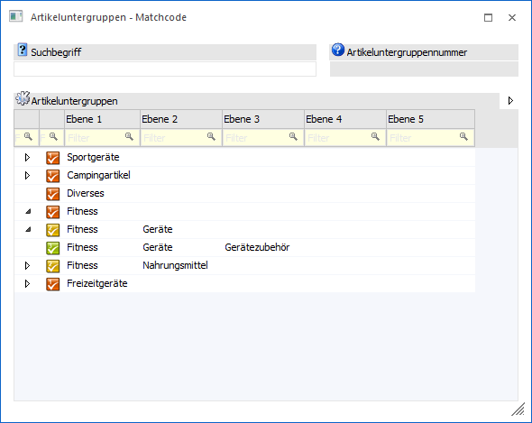
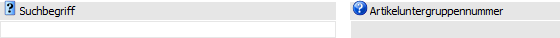
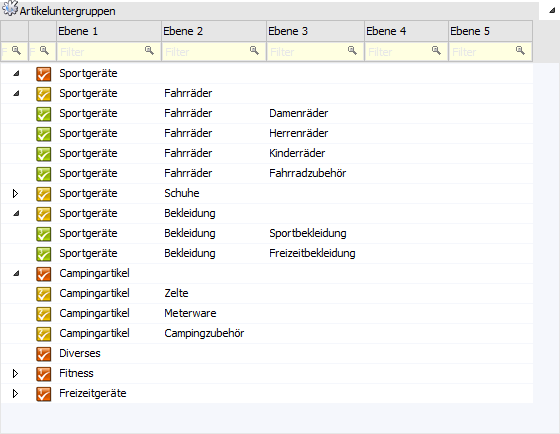

Wenn der Fokus in dem Feld "Artikeluntergruppe" liegt und das Such-Symbol bzw. die Taste F9 gedrückt wird, dann öffnet sich das Programm "Artikeluntergruppen - Matchcode". An dieser Stelle kann gezielt nach Artikeluntergruppen gesucht werden.
Hinweis
Wird der Matchcode aus einem bereits befüllten Artikeluntergruppenfeld aufgerufen, so wird dieser Wert in den Matchcode übernommen (siehe auch Feld "Artikeluntergruppennummer").
Achtung
Die Darstellung der Ergebnisanzeige kann in den FAKT-Parametern (Bereich "Artikel - Erweiterte Optionen", Option "erweiterte Anzeige") definiert werden.
ü Option "deaktiviert"
(Standard)
Es werden in der Tabelle immer nur jene Artikeluntergruppen
angezeigt, welche dem Suchbegriff entsprechen.
ü Option "aktiviert"
Es werden in
der Tabelle immer alle Artikeluntergruppen dargestellt, wobei die Treffer
hervorgehoben werden.

Suchbegriff

Ø Suchbegriff
Die Auswahl kann durch die Eingabe eines Suchbegriffs eingeschränkt werden. Die Suche erfolgt in den Artikeluntergruppenfeldern "Nummer" und "Bezeichnung".
Ø Artikeluntergruppennummer
Wird der Matchcode aus einem bereits befüllten Artikeluntergruppenfeld aufgerufen, so wird dieser Wert in den Matchcode übernommen und im Feld "Artikeluntergruppennummer" die jeweilige Nummer dargestellt.
Tabelle "Suchergebnis"

In der Tabelle werden bereits vor dem Auslösen der Suche (Suchbegriff bestätigen) alle angelegten Artikeluntergruppen mit ihrer jeweiligen Bezeichnung aufgelistet.
Nach dem Auslösen der Suche (Suchbegriff bestätigen) werden die gefundenen Gruppen mit ihrer Bezeichnung und der Nummer angezeigt.
Per Doppelklick oder Enter-Taste kann die ausgewählte Artikeluntergruppe in das Ausgangsfenster übernommen werden.
Buttons
Ø Anzeigen
Durch Anwahl des Buttons "Anzeigen" bzw. der Taste F5 wird die Suche gestartet.
Hinweis
Durch Bestätigung der Eingabe im Feld "Suchbegriff" wird die Suche ebenfalls gestartet.
Ø Ende
Durch Anwahl des Buttons "Ende" bzw. der Taste ESC wird das Fenster geschlossen.
Ø Neuanlage
Durch Anwahl des Buttons "Neuanlage" wird das Fenster "Artikeluntergruppen" geöffnet, in welchem neue Gruppen angelegt werden können.
Ø Editieren
Die markierte Gruppe wird im Fenster "Artikeluntergruppen" zum Editieren geöffnet.